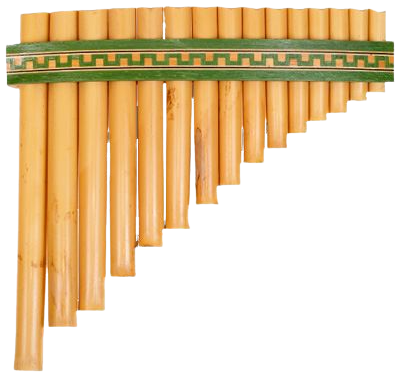
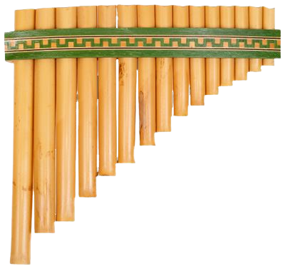
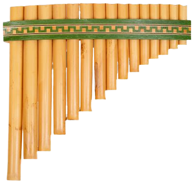
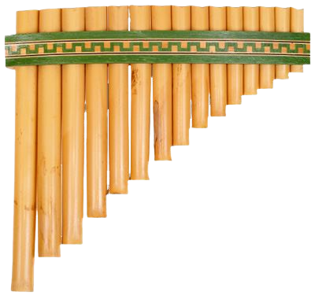

PLAY
PAN-FLUTE
ON
E-NSTRUMENTS!

 



Use your computer keyboard or click the pan-flute to play the virtual pan-flute. You can use the following shortcuts:
First alphabet row (Q to I) :
Second alphabet row (A to J):